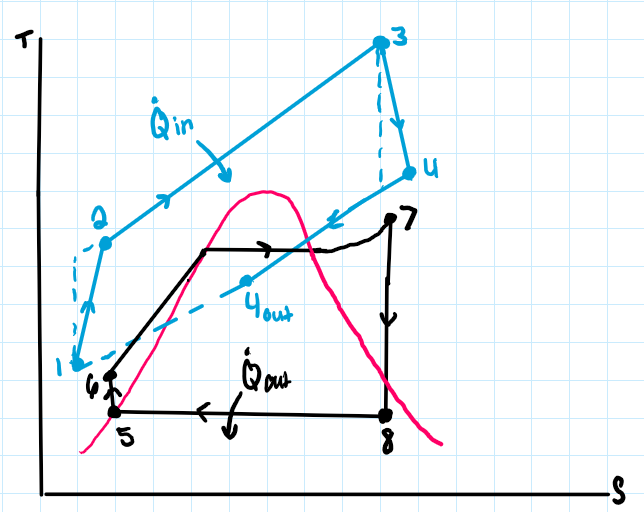

Gas turbine
Modeled 312.02 MW compressor demand and 234.13 MW turbine work.
EML 4106C collaborative project · Spring 2026
A team analysis of a simplified TECO Big Bend-style Brayton-Rankine plant sized against the demand of 150,000 homes.

The model combines a gas-turbine Brayton cycle with a steam Rankine cycle that captures energy from the hot exhaust.
The analysis traces compressor work, combustion heat, steam quality, water mass flow, turbine work, generator efficiency, household demand, fuel flow, and operating cost. This was a team-authored report; the preserved submission does not identify individual section ownership.
Modeled 312.02 MW compressor demand and 234.13 MW turbine work.
Calculated 86.534 kg/s water flow, 0.793 exit quality, and 82.06 MW turbine work.
Estimated 217.74 MW and 74.67 MW from the two generators.
Converted 16.235 kg/s of gas at $0.40/kg into approximately $561,082 per day.
Pressure ratio changes the fuel bill.
Increasing the compressor pressure ratio from 14 to 34 reduced modeled combustion heat from 623.42 MW to 427.80 MW.
Under the assignment assumptions, that translated to $176,063.49 per day in fuel savings, while implying a more demanding and potentially more expensive compressor.
| Model element | Evidence | Status |
|---|---|---|
| Energy balance | Brayton and Rankine state calculations carried through component and generator outputs. | Completed |
| Demand comparison | Output compared with modeled March, July, and November residential loads. | Completed |
| Course evaluation | Canvas recorded 106/100, including bonus sensitivity work. | Graded |
| Plant fidelity | Steady state, fixed efficiencies, and idealized component behavior limit real-world prediction. | Model limitation |